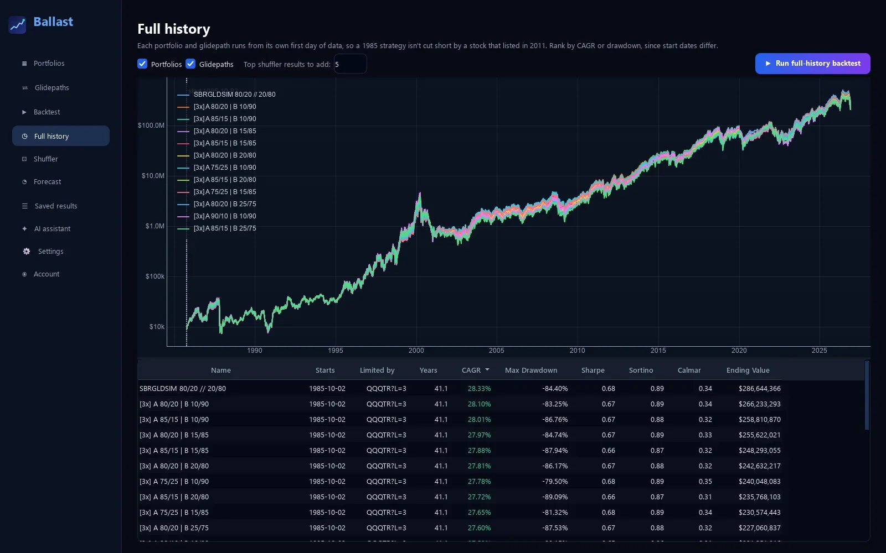
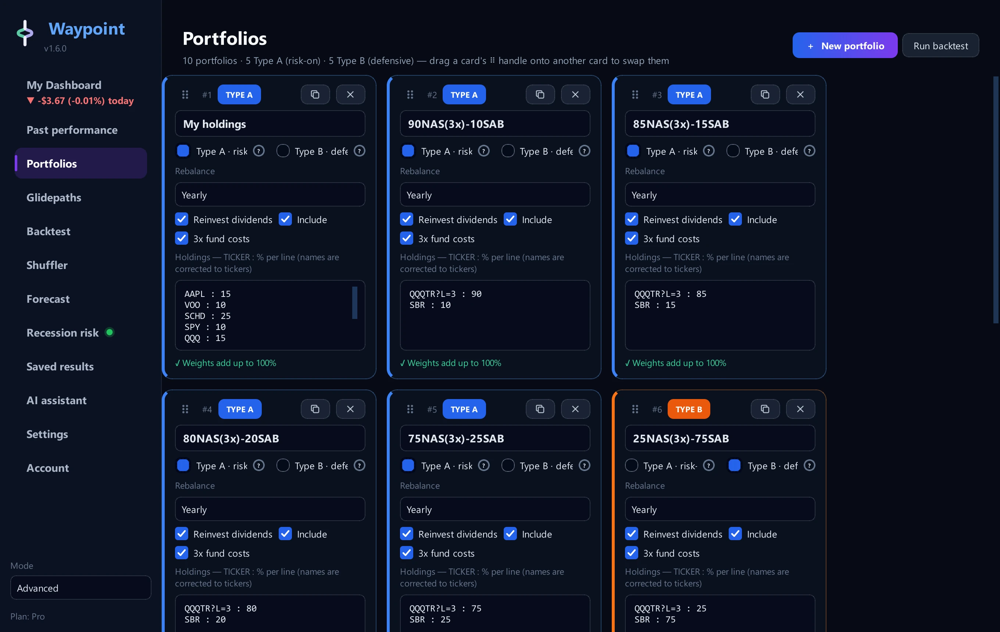

A full research lab for risk-on / risk-off investing
Most backtesters test one portfolio at a time. Ballast tests the switch between two, which is the part that decides whether a leveraged strategy survives a crash.
Glidepath switching
Pair a growth portfolio (Type A) with a defensive one (Type B) and move between them on your own schedule, such as the dates of past recessions, or gradually.
Real US capital gains tax
2026 federal brackets, short- vs long-term lots, NIIT, loss carryforward, FIFO or highest-cost-first, and an optional state rate. It's computed on every sale.
True cost of leverage
Daily borrowing costs from historical interest rates, fund expense ratios (0.94% for 3x Nasdaq) and rebalancing friction, the reasons leveraged funds lag "3× the index".
Variation shuffler
Automatically tests every pairing of your portfolios across schedules, skipping what it has already run, with an out-of-sample check so a lucky fit doesn't fool you.
Full-history mode
Every portfolio runs from its own earliest data, with each start date marked on one chart, so a 1985 strategy isn't cut short by a 2011 stock.
IPO-era filter
Leaves out each stock's unstable first years after listing, both the hype gains and the early crashes, so results reflect established companies.
Future simulation
Thousands of Monte Carlo futures built from your strategy's own history: median, bad-case and good-case outcomes, the chance of reaching your goal, and worst drawdowns.
Private AI portfolio builder
Describe what you want ("80% in each of these, 20% 3x Nasdaq") and the built-in assistant creates the portfolios. Runs privately on your PC with the free Ollama, or with your own Gemini key.
Saved results library
Every backtest is saved automatically, so you can search, compare, chart and export past results without re-running anything.
Every strategy from its first day of data
Compare portfolios that started at different times on one chart, on a log scale, with the starting point of each one marked.
- Drawdowns, rolling returns, yearly returns and events
- Correlations and beta vs the market
- Sort by CAGR, Sharpe, Sortino, Calmar or max drawdown

See the range of futures, not one guess
The future simulation replays random 12-month stretches of your strategy's real history thousands of times, so crashes and recoveries show up about as often as they really did.
- Bad-case, median and good-case outcomes
- Monthly contributions, inflation and a return haircut
- Probability of hitting your goal

Portfolio cards you can drag, duplicate and toggle
Label each portfolio Type A or Type B, switch fund costs and total return on or off per portfolio, and drag cards to reorder them. You can also describe what you want and let the AI assistant build the cards.
- Any Yahoo Finance ticker, plus leveraged and simulated legs
- Yearly to daily rebalancing
- 10 colour themes
